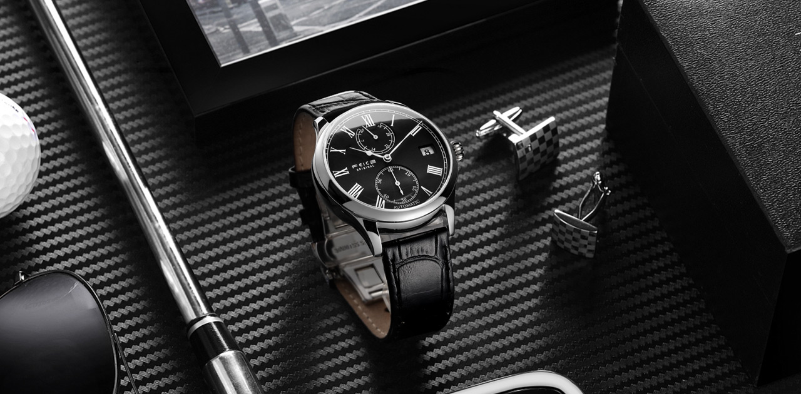

品牌故事
2009年3月，飞克品牌诞生于中国设计之都深圳。
这个春天似乎格外热情，怀着矢志成为行业第一的的满腔热忱，年轻的团队开始极力绽放他们的创造力。
但谁也未能预想，此后迎来的是漫长五年的事业寒冬。
品牌之路并非一帆风顺，当时行业格局混乱不堪，国内腕表品牌被国外品牌碾压足下，更有无良劣品倾轧冲撞……
真正专注于事业梦想困难重重，团队始终专业精耕，却几度走到解体边缘。
为中国乃至全世界的年轻人设计与创造！
是最初确立的企业信念一次次支撑团队度过绝望，亦步亦趋走向黎明。
2014年，新生代崛起，消费观念加速升级，国表品牌厚积而薄发，大势所趋之下，飞克品牌应势而上！
飞克汲取经验，强化以年轻为本的经营理念，专注为“年轻，时尚，个性，自我”而代言。
全新设计的飞克手表风格简约个性，崇尚以最少的设计语言表达最丰富的设计内涵，以最独特的艺术视角宣扬最强烈的时尚态度。
飞克主张：每一位年轻代，都是飞克的品牌设计师。
飞克借此一路突围，2018年终如畅想，飞克成为互联网腕表领军品牌！
没有任何成功属于偶然，一如许多伟大品牌，飞克一直步履坚定，并默默坚守创新。
飞克研发团队历经5年，自主研发双曲防刮表镜，逐步成为行业尖端工艺代表，其通透、立体、纯粹、个性等特点为年轻代所深深青睐。
飞克天生拥有创新基因，飞克早已悄然杨帆领航国表创新之路。
飞克，正当时！
飞克将永远保持年轻，永远关注梦想力量、生活质感与公益事业，永远坚守“只做行业第一”的宏伟愿景。
飞克终将成为值得所有人骄傲的梦之队——梦不止于无负年轻，也深藏着不甘人后的民族情怀。
”中国飞克！最年轻、最时尚、最个性、最自我！“，这是飞克骄傲赋予自身的时代使命。
心有梦，注定远行；心有恒，不忘初心始终。
飞克邀时光与你，共同见证未来。